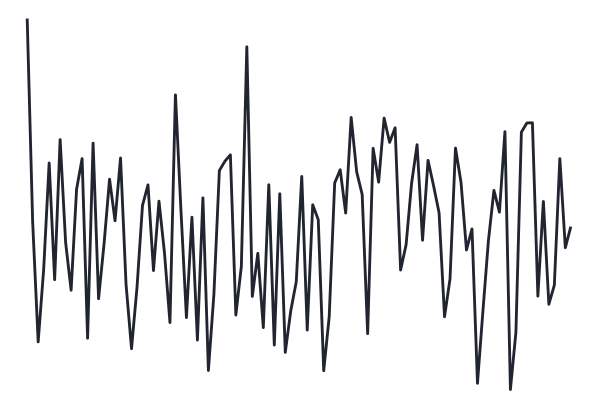

Welcome
I Theoretical chapters
1
Theoretical framework
1.1
Rumination as a form of repetitive negative thinking
1.1.1
Theoretical perspectives on rumination
1.1.2
Measures of rumination
1.1.3
On the verbal and sensory properties of rumination
1.2
What is that little voice inside my head ?
1.2.1
Brief historical overview of inner speech investigations
1.2.2
Theoretical perspectives about inner speech production
1.3
Theoretical perspective on motor imagery
1.3.1
Overt and imagined actions
1.3.2
The motor simulation theory
1.3.3
Emulation and internal models
1.4
Electromyography of covert actions
1.4.1
Explaining the muscular activity during motor imagery
1.4.2
Controversial findings
1.4.3
Electromyographic correlates of inner speech production
2
Methodological framework
2.1
Speech production mechanisms
2.1.1
Psychological aspects of speech production
2.1.2
Biomechanical aspects of speech production
2.2
A brief introduction to electromyography
2.2.1
Nature of the EMG signal
2.2.2
EMG instrumentation and recording
2.2.3
EMG signal processing
2.3
Statistical modelling and statistical inference
2.3.1
Limitations of the standard statistical approach in Psychology
2.3.2
Our statistical approach
2.4
Overview of the following chapters
II Experimental chapters
3
Orofacial electromyographic correlates of induced verbal rumination
3.1
Abstract
3.2
Introduction
3.3
Methods
3.3.1
Participants
3.3.2
Material
3.3.3
Procedure
3.3.4
Data processing and analysis
3.4
Results
3.4.1
Experiment 1: rumination induction
3.4.2
Experiment 2: rumination reduction by relaxation
3.5
Discussion
3.5.1
Experiment 1
3.5.2
Experiment 2
3.5.3
General discussion
3.6
Acknowledgements
3.7
Supplementary data
4
Dissociating facial electromyographic correlates of visual and verbal induced rumination
4.1
Abstract
4.2
Introduction
4.2.1
Rumination: its definition, functions and consequences
4.2.2
The nature of ruminative thoughts
4.2.3
Inducing rumination in a controlled environment
4.2.4
The present study
4.3
Methods
4.3.1
Participants
4.3.2
Material
4.3.3
Procedure
4.3.4
EMG signal processing
4.3.5
Data analysis
4.4
Results
4.4.1
Effects of the rumination induction and rumination modality
4.4.2
Effects of the relaxation
4.5
Discussion
4.5.1
Inducing rumination in different modalities
4.5.2
Modality-specific and effector-specific relaxation effects
4.5.3
Conclusions
4.6
Supplementary materials
4.7
Acknowledgements
5
Muscle-specific electromyographic correlates of inner speech production
5.1
Abstract
5.2
Introduction
5.3
Inner speech as motor imagery of speech
5.4
Electromyographic correlates of covert actions
5.5
Methods
5.5.1
Participants
5.5.2
Material
5.5.3
Procedure
5.5.4
EMG signal processing
5.5.5
Data analysis
5.6
Results
5.6.1
Confirmatory (preregistered) analyses
5.6.2
Exploratory (non-preregistered) analyses
5.7
Discussion
5.8
Supplementary materials
Acknowledgements
6
Articulatory suppression effects on induced rumination
7
Refining the involvement of the speech motor system during rumination: a dual-task investigation
III Discussion and conclusions
8
Discussion and perspectives
8.1
Summary of the results
8.2
Benchmarks for theories of inner speech
8.3
Limitations and ways forward
8.4
Conclusions
References
Powered by bookdown
Ladislas Nalborczyk
Understanding rumination as a form of inner speech
Understanding rumination as a form of inner speech
Welcome
This book, when finished, will contain my doctoral thesis (last compiled on 2019-05-08).
